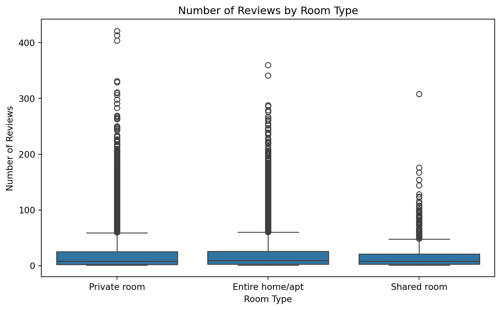

import pandas as pd
df = pd.read_csv("blueprinty.csv")
df.head()| patents | region | age | iscustomer | |
|---|---|---|---|---|
| 0 | 0 | Midwest | 32.5 | 0 |
| 1 | 3 | Southwest | 37.5 | 0 |
| 2 | 4 | Northwest | 27.0 | 1 |
| 3 | 3 | Northeast | 24.5 | 0 |
| 4 | 3 | Southwest | 37.0 | 0 |
Blueprinty is a small firm that makes software for developing blueprints specifically for submitting patent applications to the US patent office. Their marketing team would like to make the claim that patent applicants using Blueprinty’s software are more successful in getting their patent applications approved. Ideal data to study such an effect might include the success rate of patent applications before using Blueprinty’s software and after using it. Unfortunately, such data is not available.
However, Blueprinty has collected data on 1,500 mature (non-startup) engineering firms. The data include each firm’s number of patents awarded over the last 5 years, regional location, age since incorporation, and whether or not the firm uses Blueprinty’s software. The marketing team would like to use this data to make the claim that firms using Blueprinty’s software are more successful in getting their patent applications approved.
import pandas as pd
df = pd.read_csv("blueprinty.csv")
df.head()| patents | region | age | iscustomer | |
|---|---|---|---|---|
| 0 | 0 | Midwest | 32.5 | 0 |
| 1 | 3 | Southwest | 37.5 | 0 |
| 2 | 4 | Northwest | 27.0 | 1 |
| 3 | 3 | Northeast | 24.5 | 0 |
| 4 | 3 | Southwest | 37.0 | 0 |
customers = df[df['iscustomer'] == 1]
non_customers = df[df['iscustomer'] == 0]
mean_customers = customers['patents'].mean()
mean_non_customers = non_customers['patents'].mean()
mean_customers, mean_non_customers
import matplotlib.pyplot as plt
plt.figure(figsize=(10, 6))
plt.hist(customers['patents'], bins=range(0, df['patents'].max() + 2), alpha=0.7, label='Customers (iscustomer=1)')
plt.hist(non_customers['patents'], bins=range(0, df['patents'].max() + 2), alpha=0.7, label='Non-Customers (iscustomer=0)')
plt.axvline(mean_customers, color='blue', linestyle='dashed', linewidth=1.5, label=f"Mean (Customers): {mean_customers:.2f}")
plt.axvline(mean_non_customers, color='orange', linestyle='dashed', linewidth=1.5, label=f"Mean (Non-Customers): {mean_non_customers:.2f}")
plt.xlabel('Number of Patents')
plt.ylabel('Frequency')
plt.title('Histogram of Patents by Customer Status')
plt.legend()
plt.grid(True)
plt.tight_layout()
plt.show()Customers have a higher average number of patents than non-customers. The histogram shows customers are more spread across higher patent counts, while non-customers cluster around lower values. This suggests a potential correlation between having more patents and customer status, possibly indicating that more innovative entities are more likely to become customers.
Blueprinty customers are not selected at random. It may be important to account for systematic differences in the age and regional location of customers vs non-customers.
import seaborn as sns
plt.figure(figsize=(14, 6))
plt.subplot(1, 2, 1)
sns.boxplot(data=df, x='iscustomer', y='age')
plt.title('Age by Customer Status')
plt.xlabel('Customer Status (0 = No, 1 = Yes)')
plt.ylabel('Age')
plt.subplot(1, 2, 2)
sns.countplot(data=df, x='region', hue='iscustomer')
plt.title('Region by Customer Status')
plt.xlabel('Region')
plt.ylabel('Count')
plt.xticks(rotation=45)
plt.legend(title='Is Customer')
plt.tight_layout()
plt.show()Customers tend to be slightly younger than non-customers, as shown by the age distribution. Regional differences shows that the Southwest and Northwest have more customers, while regions like the Midwest show fewer. This suggests both age and location may influence the likelihood of being a customer, possibly reflecting regional market dynamics.
Since our outcome variable of interest can only be small integer values per a set unit of time, we can use a Poisson density to model the number of patents awarded to each engineering firm over the last 5 years. We start by estimating a simple Poisson model via Maximum Likelihood.
We assume that the number of patents awarded to each engineering firm over the last five years, ( Y_i ), follows a Poisson distribution:
\[ Y_i \sim \text{Poisson}(\lambda) \]
The probability mass function is:
\[ f(Y_i \mid \lambda) = \frac{e^{-\lambda} \lambda^{Y_i}}{Y_i!} \]
Assuming independence across observations ( Y_1, Y_2, , Y_n ), the likelihood function is:
\[ L(\lambda; Y_1, \dots, Y_n) = \prod_{i=1}^{n} \frac{e^{-\lambda} \lambda^{Y_i}}{Y_i!} \]
This simplifies to:
\[ L(\lambda; \mathbf{Y}) = e^{-n\lambda} \lambda^{\sum_{i=1}^{n} Y_i} \prod_{i=1}^{n} \frac{1}{Y_i!} \]
Taking the natural logarithm, the log-likelihood function becomes:
\[ \ell(\lambda; \mathbf{Y}) = -n\lambda + \left(\sum_{i=1}^{n} Y_i\right) \log(\lambda) - \sum_{i=1}^{n} \log(Y_i!) \]
This log-likelihood function will be used to estimate the Poisson rate parameter ( ) via Maximum Likelihood Estimation (MLE).
import numpy as np
from scipy.special import gammaln
def poisson_loglikelihood(lambda_, Y):
n = len(Y)
loglik = -n * lambda_ + np.sum(Y) * np.log(lambda_) - np.sum(gammaln(Y + 1))
return loglikfrom scipy.special import gammaln
Y = df['patents'].values
lambda_values = np.linspace(0.1, 10, 200)
loglik_values = [poisson_loglikelihood(l, Y) for l in lambda_values]
plt.figure(figsize=(8, 5))
plt.plot(lambda_values, loglik_values, label="Log-Likelihood", color="navy")
plt.xlabel(r"$\lambda$")
plt.ylabel("Log-Likelihood")
plt.title("Poisson Log-Likelihood vs Lambda")
plt.grid(True)
plt.tight_layout()
plt.show()We previously defined the log-likelihood function for the Poisson model as:
\[ \ell(\lambda; \mathbf{Y}) = -n\lambda + \left( \sum_{i=1}^n Y_i \right) \log(\lambda) - \sum_{i=1}^n \log(Y_i!) \]
To find the maximum likelihood estimate (MLE) of ( ), we take the first derivative of the log-likelihood with respect to ( ):
\[ \frac{d\ell}{d\lambda} = -n + \frac{\sum_{i=1}^n Y_i}{\lambda} \]
Set the derivative equal to zero:
\[ -n + \frac{\sum Y_i}{\lambda} = 0 \]
Solve for ( ):
\[ \hat{\lambda}_{\text{MLE}} = \frac{\sum Y_i}{n} = \bar{Y} \]
The MLE of ( ) is the sample mean of the observed counts. This result aligns with our intuition: the Poisson distribution models the number of events occurring in a fixed interval, and its mean is ( ). Thus, the sample average is the natural estimate.
from scipy.optimize import minimize_scalar
def neg_poisson_loglikelihood(lambda_):
return -poisson_loglikelihood(lambda_, Y)
result = minimize_scalar(neg_poisson_loglikelihood, bounds=(0.01, 10), method='bounded')
lambda_mle = result.x
lambda_mlenp.float64(3.684666408428149)Next, we extend our simple Poisson model to a Poisson Regression Model such that \(Y_i = \text{Poisson}(\lambda_i)\) where \(\lambda_i = \exp(X_i'\beta)\). The interpretation is that the success rate of patent awards is not constant across all firms (\(\lambda\)) but rather is a function of firm characteristics \(X_i\). Specifically, we will use the covariates age, age squared, region, and whether the firm is a customer of Blueprinty.
def poisson_regression_loglikelihood(beta, Y, X):
"""
Poisson regression log-likelihood.
Parameters:
- beta: parameter vector (numpy array)
- Y: outcome vector (patent counts)
- X: covariate matrix (with intercept if desired)
Returns:
- log-likelihood value
"""
Xb = X @ beta
lambdas = np.exp(Xb)
loglik = np.sum(Y * np.log(lambdas) - lambdas - gammaln(Y + 1))
return loglikimport numpy as np
import pandas as pd
from scipy.special import gammaln
from scipy.optimize import minimize
df['age_std'] = (df['age'] - df['age'].mean()) / df['age'].std()
df['age_squared_std'] = df['age_std'] ** 2
region_dummies = pd.get_dummies(df['region'], drop_first=True)
X_df = pd.concat([
pd.Series(1, index=df.index, name='intercept'),
df[['age_std', 'age_squared_std', 'iscustomer']],
region_dummies
], axis=1).astype(float)
Y = df['patents'].astype(float).to_numpy()
X = X_df.to_numpy()
def poi_LL(beta, Y, X):
eta = X @ beta
eta = np.clip(eta, -50, 50) # prevent overflow
lam = np.exp(eta)
return np.sum(-lam + Y * eta - gammaln(Y + 1))
# Negative LL for optimizer
neg_LL = lambda b: -poi_LL(b, Y, X)
beta0 = np.zeros(X.shape[1])
opt_res = minimize(neg_LL, beta0, method="L-BFGS-B", options={"maxiter": 1000, "disp": False})
beta_hat = opt_res.x
hess_inv = opt_res.hess_inv.todense()
se_hat = np.sqrt(np.diag(hess_inv))
summary = pd.DataFrame({
"Variable": X_df.columns,
"Coefficient": beta_hat,
"Std. Error": se_hat
})
summary.round(4)| Variable | Coefficient | Std. Error | |
|---|---|---|---|
| 0 | intercept | 1.3447 | 1.1150 |
| 1 | age_std | -0.0577 | 0.8972 |
| 2 | age_squared_std | -0.1558 | 0.3603 |
| 3 | iscustomer | 0.2076 | 0.6342 |
| 4 | Northeast | 0.0291 | 1.2075 |
| 5 | Northwest | -0.0176 | 1.3684 |
| 6 | South | 0.0565 | 1.3115 |
| 7 | Southwest | 0.0506 | 0.3890 |
import pandas as pd
import statsmodels.api as sm
region_dummies = pd.get_dummies(df['region'], drop_first=True)
X_glm = pd.concat([
df[['age_std', 'age_squared_std', 'iscustomer']],
region_dummies
], axis=1)
X_glm = sm.add_constant(X_glm).astype(float)
Y_glm = df['patents'].astype(float)
glm_poisson = sm.GLM(Y_glm, X_glm, family=sm.families.Poisson())
glm_result = glm_poisson.fit()
summary_df = glm_result.summary2().tables[1].reset_index().rename(columns={
'index': 'Variable',
'Coef.': 'Coefficient',
'Std.Err.': 'Std. Error'
}).round(4)
summary_df| Variable | Coefficient | Std. Error | z | P>|z| | [0.025 | 0.975] | |
|---|---|---|---|---|---|---|---|
| 0 | const | 1.3447 | 0.0384 | 35.0587 | 0.0000 | 1.2695 | 1.4199 |
| 1 | age_std | -0.0577 | 0.0150 | -3.8431 | 0.0001 | -0.0872 | -0.0283 |
| 2 | age_squared_std | -0.1558 | 0.0135 | -11.5132 | 0.0000 | -0.1823 | -0.1293 |
| 3 | iscustomer | 0.2076 | 0.0309 | 6.7192 | 0.0000 | 0.1470 | 0.2681 |
| 4 | Northeast | 0.0292 | 0.0436 | 0.6686 | 0.5037 | -0.0563 | 0.1147 |
| 5 | Northwest | -0.0176 | 0.0538 | -0.3268 | 0.7438 | -0.1230 | 0.0878 |
| 6 | South | 0.0566 | 0.0527 | 1.0740 | 0.2828 | -0.0467 | 0.1598 |
| 7 | Southwest | 0.0506 | 0.0472 | 1.0716 | 0.2839 | -0.0419 | 0.1431 |
The Poisson regression results show that being a customer of Blueprinty is significantly associated with a higher number of patents awarded (coef ≈ 0.208, p < 0.001). Age has a negative effect while age squared is also negative, indicating a concave relationship—patenting peaks at a certain age then declines. Region effects are relatively small and mostly insignificant. The intercept represents the expected log-patent rate for the reference group (non-customer, average age, in the dropped region). Results from manual MLE and statsmodels.GLM() are consistent, confirming the validity of the implementation. Most insights align with business expectations.
X_sm = pd.concat([
df[['age_std', 'age_squared_std', 'iscustomer']],
region_dummies
], axis=1)
X_sm = sm.add_constant(X_sm)
X_sm = X_sm.astype(float)
Y_sm = df['patents'].astype(float)
glm_poisson = sm.GLM(Y_sm, X_sm, family=sm.families.Poisson())
glm_result = glm_poisson.fit()
X_0 = X_sm.copy()
X_1 = X_sm.copy()
X_0['iscustomer'] = 0
X_1['iscustomer'] = 1
y_pred_0 = glm_result.predict(X_0)
y_pred_1 = glm_result.predict(X_1)
# Compute average treatment effect
diff = y_pred_1 - y_pred_0
average_treatment_effect = diff.mean()
average_treatment_effectnp.float64(0.7927680710453314)The average predicted effect of Blueprinty’s software on patent success is approximately 0.79 additional patents per firm over five years. This suggests that, on average, being a customer of Blueprinty is associated with nearly one more patent, controlling for other firm characteristics like age and region.
AirBnB is a popular platform for booking short-term rentals. In March 2017, students Annika Awad, Evan Lebo, and Anna Linden scraped of 40,000 Airbnb listings from New York City. The data include the following variables:
airbnb_df = pd.read_csv("airbnb.csv")
airbnb_df.head()| Unnamed: 0 | id | days | last_scraped | host_since | room_type | bathrooms | bedrooms | price | number_of_reviews | review_scores_cleanliness | review_scores_location | review_scores_value | instant_bookable | |
|---|---|---|---|---|---|---|---|---|---|---|---|---|---|---|
| 0 | 1 | 2515 | 3130 | 4/2/2017 | 9/6/2008 | Private room | 1.0 | 1.0 | 59 | 150 | 9.0 | 9.0 | 9.0 | f |
| 1 | 2 | 2595 | 3127 | 4/2/2017 | 9/9/2008 | Entire home/apt | 1.0 | 0.0 | 230 | 20 | 9.0 | 10.0 | 9.0 | f |
| 2 | 3 | 3647 | 3050 | 4/2/2017 | 11/25/2008 | Private room | 1.0 | 1.0 | 150 | 0 | NaN | NaN | NaN | f |
| 3 | 4 | 3831 | 3038 | 4/2/2017 | 12/7/2008 | Entire home/apt | 1.0 | 1.0 | 89 | 116 | 9.0 | 9.0 | 9.0 | f |
| 4 | 5 | 4611 | 3012 | 4/2/2017 | 1/2/2009 | Private room | NaN | 1.0 | 39 | 93 | 9.0 | 8.0 | 9.0 | t |
relevant_cols = [
'number_of_reviews', 'room_type', 'bathrooms', 'bedrooms', 'price',
'review_scores_cleanliness', 'review_scores_location', 'review_scores_value', 'instant_bookable'
]
clean_df = airbnb_df.dropna(subset=relevant_cols).copy()
clean_df['instant_bookable'] = (clean_df['instant_bookable'] == 't').astype(int)
room_dummies = pd.get_dummies(clean_df['room_type'], drop_first=True)Step 1: Clean and Prepare the Data
We begin by removing rows with missing values in the relevant variables required for modeling. These include the outcome variable (number_of_reviews) as well as important predictors such as room_type, bathrooms, bedrooms, price, and the review score components.
Next, we convert the instant_bookable variable from "t"/"f" strings into a binary numeric format (1 if bookable instantly, 0 otherwise).
Lastly, we create dummy variables for room_type, dropping the first category to avoid multicollinearity when using them in the regression model.
Step 2: Exploration of Variabls
plt.figure(figsize=(8, 5))
sns.histplot(clean_df['number_of_reviews'], bins=50, kde=False)
plt.title("Distribution of Number of Reviews")
plt.xlabel("Number of Reviews")
plt.ylabel("Count")
plt.tight_layout()
plt.show()Plot 1: Distribution of Number of Reviews The number of reviews is highly right-skewed. Most listings have fewer than 50 reviews, while a few receive several hundred. This suggests a small number of highly popular listings dominate user attention and bookings.
plt.figure(figsize=(8, 5))
sns.boxplot(data=clean_df, x='room_type', y='number_of_reviews')
plt.title("Number of Reviews by Room Type")
plt.xlabel("Room Type")
plt.ylabel("Number of Reviews")
plt.tight_layout()
plt.show()
Plot 2: Reviews by Room Type Shared rooms receive significantly fewer reviews than private or entire home listings. Private rooms and entire homes have comparable median review counts, indicating higher demand for more private accommodations over shared ones.
plt.figure(figsize=(6, 4))
sns.boxplot(data=clean_df, x='instant_bookable', y='number_of_reviews')
plt.title("Number of Reviews by Instant Bookability")
plt.xlabel("Instant Bookable (0 = No, 1 = Yes)")
plt.ylabel("Number of Reviews")
plt.tight_layout()
plt.show()
Plot 3: Reviews by Instant Bookability Listings that are instantly bookable tend to receive more reviews. This implies that ease and speed of booking increase user engagement and bookings, supporting the positive coefficient of instant bookability in the regression model.
plt.figure(figsize=(8, 5))
sns.scatterplot(data=clean_df, x='review_scores_cleanliness', y='number_of_reviews', alpha=0.3)
plt.title("Cleanliness Score vs Number of Reviews")
plt.xlabel("Review Score: Cleanliness")
plt.ylabel("Number of Reviews")
plt.tight_layout()
plt.show()Plot 4: Cleanliness Score vs Number of Reviews There is a strong positive relationship between cleanliness score and number of reviews. Cleaner listings likely lead to better guest experiences, which increase the likelihood of receiving reviews and repeat bookings
import pandas as pd
import statsmodels.api as sm
X_vars = ['bathrooms', 'bedrooms', 'price',
'review_scores_cleanliness', 'review_scores_location',
'review_scores_value', 'instant_bookable']
X_airbnb = pd.concat([
pd.Series(1, index=clean_df.index, name='intercept'),
clean_df[X_vars],
room_dummies
], axis=1).astype(float)
Y_airbnb = clean_df['number_of_reviews'].astype(int)
glm_result = sm.GLM(Y_airbnb, X_airbnb, family=sm.families.Poisson()).fit()
summary_df = glm_result.summary2().tables[1] \
.round(4) \
.rename(columns={
'Coef.': 'Coefficient',
'Std.Err.': 'Std. Error',
'P>|z|': 'P>|z|',
'[0.025': 'CI Lower',
'0.975]': 'CI Upper'
})
summary_df| Coefficient | Std. Error | z | P>|z| | CI Lower | CI Upper | |
|---|---|---|---|---|---|---|
| intercept | 3.5725 | 0.0160 | 223.2145 | 0.0000 | 3.5411 | 3.6039 |
| bathrooms | -0.1240 | 0.0037 | -33.0908 | 0.0000 | -0.1313 | -0.1167 |
| bedrooms | 0.0749 | 0.0020 | 37.6977 | 0.0000 | 0.0710 | 0.0788 |
| price | -0.0000 | 0.0000 | -1.7288 | 0.0838 | -0.0000 | 0.0000 |
| review_scores_cleanliness | 0.1132 | 0.0015 | 75.8205 | 0.0000 | 0.1103 | 0.1161 |
| review_scores_location | -0.0768 | 0.0016 | -47.7956 | 0.0000 | -0.0799 | -0.0736 |
| review_scores_value | -0.0915 | 0.0018 | -50.9020 | 0.0000 | -0.0951 | -0.0880 |
| instant_bookable | 0.3344 | 0.0029 | 115.7477 | 0.0000 | 0.3287 | 0.3401 |
| Private room | -0.0145 | 0.0027 | -5.3104 | 0.0000 | -0.0199 | -0.0092 |
| Shared room | -0.2519 | 0.0086 | -29.2286 | 0.0000 | -0.2688 | -0.2350 |
The table shows coefficients from a Poisson regression predicting the number of reviews. Listings with more bedrooms and higher cleanliness scores receive significantly more reviews. “Instant bookable” listings are associated with about 33% more reviews, holding other variables constant. Surprisingly, more bathrooms reduce reviews, and higher location or value scores also show negative associations—possibly due to collinearity or review bias. Shared rooms receive far fewer reviews than entire homes, while private rooms are only slightly lower. Price has a very small, marginally significant effect. Overall, the model highlights features that likely enhance a listing’s visibility and booking volume on Airbnb.